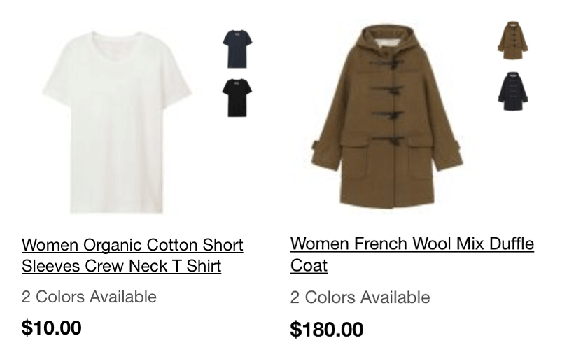
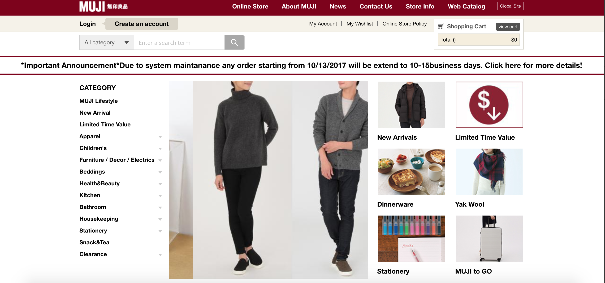
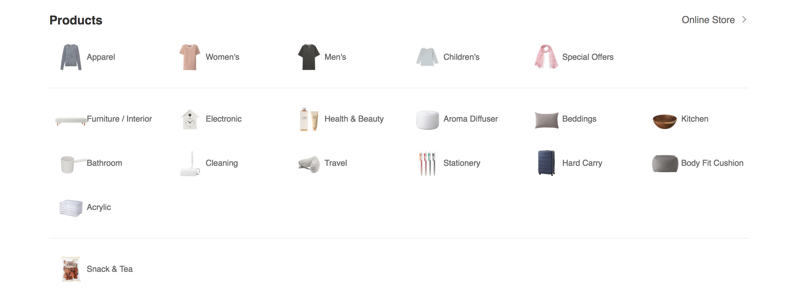
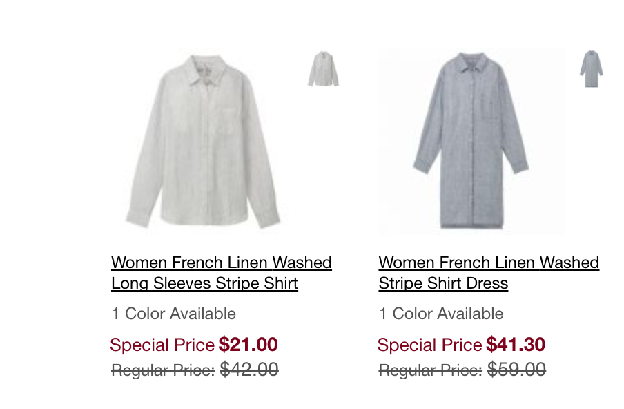
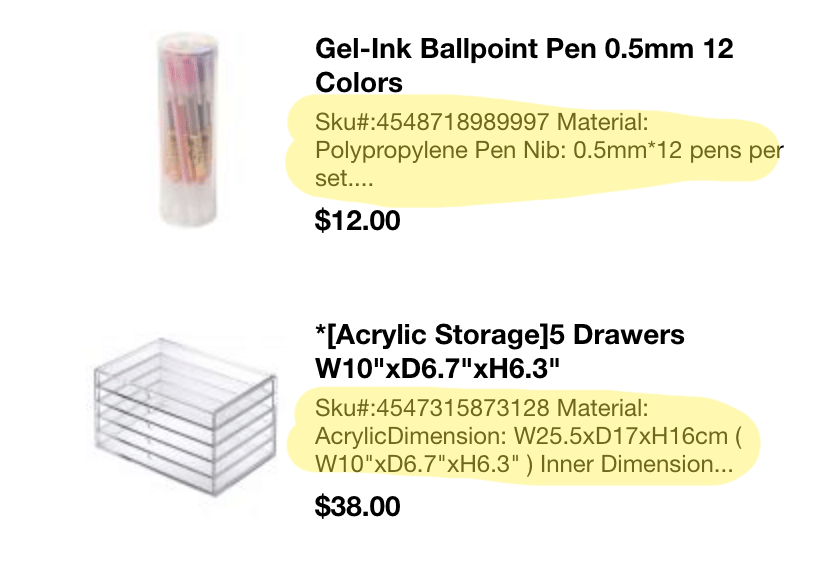
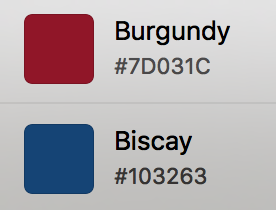
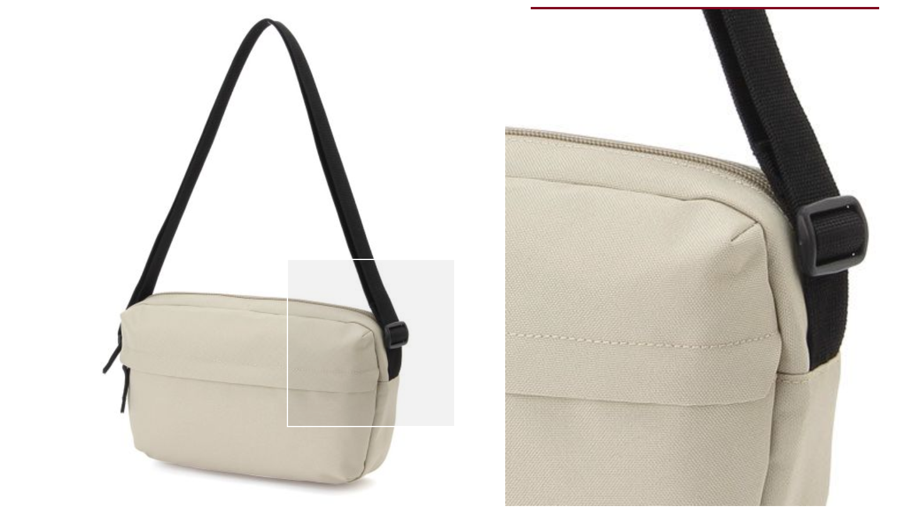
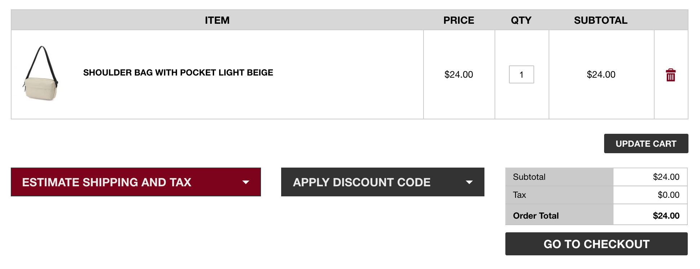
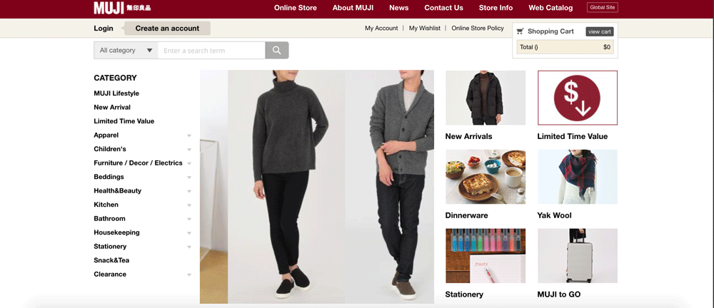

MUJI is a Japanese lifestyle consumer store that has in-person shops as well as online ordering services. Many of their products are minimalistic, ergonomically designed, and portable. Muji offers a variety of goods, such as clothing, stationary, kitchenware, furniture, and toiletries.
The target audience is largely young and trendy. Their simplistic yet well thought out design seems to also appeal to those who are themselves design oriented. It's likely that these consumers are motivated by usability, and a certain alternative demographic. Consumers are likely to have spare money to spend on higher quality items, and therefore are aimed towards younger working adults, who come from a middle to upper middle class economic standing. A t-shirt is sold for $10.00, and prices go up from that.
Consumers of MUJI like design for themselves, whether it be interior design, artistic or graphic design, or product design. They can be very driven by product appearance and aesthetic. As MUJI is originally a Japanese brand, consumers are likely familiar with the global implications of the company, and may have had more opportunity to travel, whether it be to Asia or to New York City, where the first branch of MUJI US opened. As we are analyzing the MUJI website, it makes sense for consumers to have been led to the website by ads, word-of-mouth, or have already been well established with the brand.
Some consumer concerns would be functionality of these products, how well the website demonstrates these functionalities, ease of purchase, speed of shipping, and shipping fee in comparison with other consumer shopping websites.
From first glance, the MUJI US page is very streamlined, professional, and organized. The page gives off the impression that MUJI is sincere in their product and design, likely due to the clear serif text and the white backdrop. However, when you move into the store page, the effect is lost. The moving images and the "Important Announcement " unfortunately makes the webpage less static and louder to the perception.
Still, MUJI keeps their website layout very organized, with clear division between one product and the next, making everything categorical. Therefore navigation-wise, the site is able to uphold a general personality related to organization and cleanliness.
MUJI products are displayed simply, with white backdrops, on the landing page, and rarely presented on a model. The clothes and products speak for themselves when the user browses through the website. This method of displaying the products seems to rely heavier on consumer knowledge, their experience from previous purchases. As there are many different variations in the clothes to choose from, consumers may base their choice of purchase off of prior experience, rather than the lengthy descriptions by the products.
The display likely keeps the design looking simplistic, and further emphasizes MUJI's brand. However, it does make some articles of clothing difficult to imagine for the user, and therefore does not allow a great determination of product utility.
The text next to products adds to a cluttered feeling of the main landing page which, as a browser of the website, may deter someone from making a decision clearly. However, it does help supply further usage knowledge - for example, the pens are given a clear title; there is no question that the product is a pen, of a certain nib thickness. While the extra text is not as clean, design wise, the information will be useful for consumers who are unsure of what pen to choose and still in the phase of gathering information.
However, taking a look at MUJI's About page clearly strikes the companies core values of simplicity in form. The pictures chosen are all airy and bright, giving off a lighthearted design appeal that the decision of letting the product stand-alone also upholds.
The first thing seen on the US landing page is a large square of calming blue, which holds a balanced contrast with the white of the entire webpage. When the interface switches from calming blue to a dark red, the effect is jarring. The large block of color also made the switch feel busier after heading to the store, as there is more for the eye to wander around, and no main area to focus on. Below is a side-by-side color comparison of the MUJI website banner colors - while both are muted, the red (their signature color) was not a good follow-up to the large splash of blue.
MUJI choice to have very large displays of their products once clicked into is helpful for the consumer, as the zoom-in panel allows consumers to observe quality and details, something that online shopping oftentimes lacks. It is a way for MUJI to get around the restrictions of the online venue.
MUJI also defines their cart function and their checkout steps clearly, with bold text and greyed out buttons. There is also a function for estimating shipping and tax - consumers who do choose to checkout will therefore not be dissatisfied by surprise shipping and tax fees. The expected cost of the purchase is clearly laid out for consumers to see.
The main take-away from MUJI seems to be "Simplicity is Key" - each of the items they present are not loud or colorful, but rather clean cut and white. This resonates across the website, and while each tab has a different design, all of the organized, rectangular stylings make the site cohesive. MUJI clearly outlined their company philosophy in their about page, and it translates over into the design of their consumer website. Overall, the website can be classified as a success - while the switch from blue to red was jarring, once the consumer went into the online store and browsed, the design allowed quick and easy navigation, and did not overwhelm the user with too large of a consideration set. The website very clearly defines the MUJI brand, and succeeds in areas that their user base may have had concerns (having a clear checkout and delivery process, for example).
Some improvements that can be made are to focus on enhancing the customer experience. MUJI is well known for mellow lit storefronts, and the website itself is calming. However, the loading time between switching from tab to tab drags on longer than consumers would normally like, particularly when compared with other consumer sites, such as Amazon. It would likely increase customer satisfaction to try and shorten the loading time between pages.
Another improvement would be ridding the product previews of the long string of text that users cannot truly make sense out of. Instead of enhancing the experience, it only serves to confuse. Unfortunately, the important announcement did not look like it could be x-ed out of, and weighed heavy and annoying on the interface. Making it an optional pop-up or allowing the visitor to close the announcement would serve to lessen that initial annoyance and disorientation. Below is an edited form of the online store, which could be assumed as the normal form of the website without the circumstantial announcement.
As MUJI has prominent and popular storefronts, user feedback could be taken in regards to what users would like to see on the MUJI website. A user survey could also be given after a purchase has been delivered to the recipient, discussing how satisfied with the purchase the consumer is. While the data may be less accurate due to the self-feedback process, MUJI could combine user feedback surveys with tangible numerical data of how long the average user spends on the MUJI website before either a) clicking away or b) making a purchase. This combination would therefore allow MUJI to determine whether the time spent on the website was due to confusion or for gathering knowledge before making a purchase.
Neuromarketing methods such as EEG or eye-tracking could also allow MUJI to determine whether their website is presenting too much or too little information, and whether the movement on certain pages is actually stimulating the areas that they want to stimulate.
Through color scheme and the display of products, MUJI has drawn from their physical storefront as inspiration for their website. However, certain elements do not carry through - the warmth of the store is lost on certain pages of the MUJI online stone, namely their online shop. However, MUJI uses the enlarging function on their products and the informative titles to further consumer and usage knowledge, something that no doubt makes their target audience more well-versed in the company language.
MUJI addresses the needs of its consumer base head-on: the website is simple, to the point, and lets the products speak for themselves, something that the target audience is both used to, and appreciates.